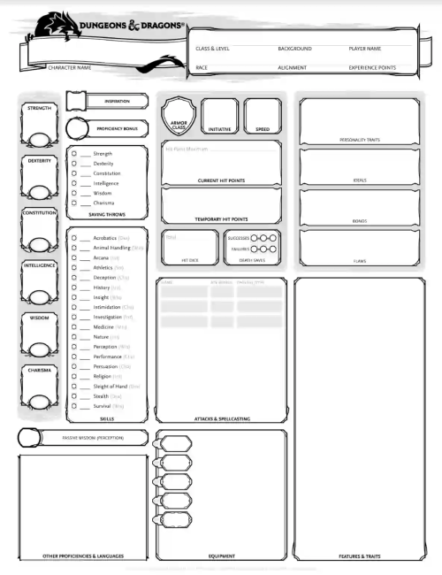
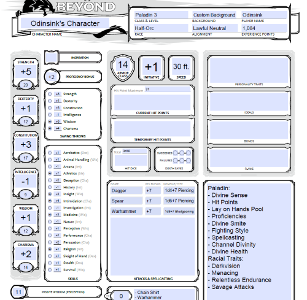

D&D is an old tabletop role-playing game that has many iterations. The keystone that holds this game together is the players who enjoy the world the Dungeon Master creates. In this process, most find themselves making a character or two. This will give you the basic information on how to build a character sheet.
This is the standard character sheet used in the 5th edition of the game. On the left side we have your Ability Scores, Saving Throw Bonuses, and Skills. These are what determines how you interact with the world. The Ability Scores are broken down into six stats;
| Strength: | Dexterity: | Constitution: | Intelligence: | Wisdom: | Charisma: |
| Strength is used for all melee combat scenarios and can be used in athletics. | Dexterity controls a number of things from sleight of hand, your initative which is your agency in combat, ranged weaponry, and etc. | Constitution is used to see how much extra health you gain upon leveling up. | Intelligence is one of the main spellcasting stats, aswell as having one of the most extensive skill lists of the Ability Scores. | Wisdoms main use is in perception which is one of the most important skills in the gain next to investigation which is from Intelligence. Secondly it is the next spellcasting Ability Score | Charisma can be used in both deception and perssuasion and is the final spellcasting Ability Scores. |
When you get done it should look similar to this
As making a Character sheet is fufilling there are some resources to aid you in this endeavoar: